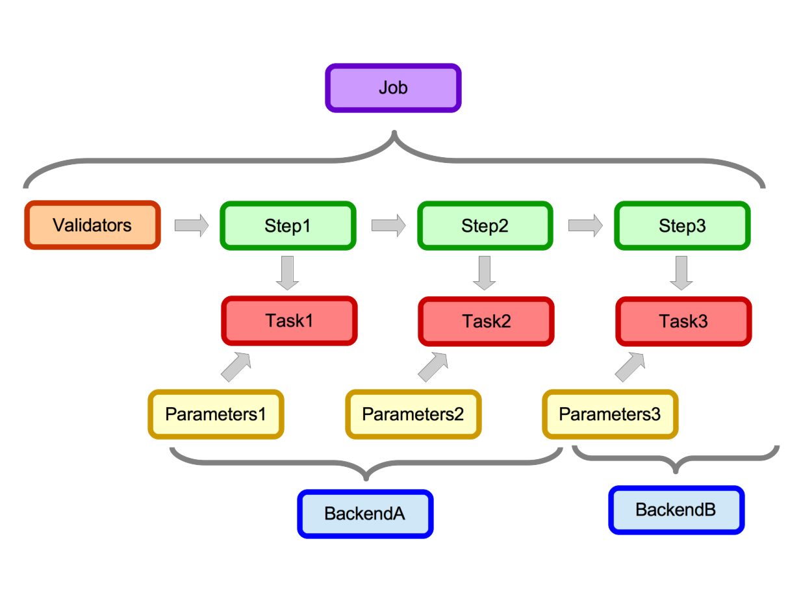

How The System Works¶
A_A turns data analysis pipelines in to RESTful webservices for the purpose of building SOA systems. A_A is made up of 2 main components;
- A system for configuring and monitoring data analysis workflows.
- A system of Celery workers which can receive the data and run those workflows.
A design goal for A_A is to make it agnostic to the code which executes the data analysis steps. This will free up analysts and scientists to use the technology or tool which is most appropriate for any given data transformation or analysis task.
The other principle design goal is to attempt to transform the problem of turning data analysis pipelines in to Web Services in to an problem of configuration rather than development.
Workflows¶
In A_A terminology a workflow is known as a Job. Jobs are made up of sequential reusable Tasks. Each Task defines the data analysis it is going to perform and understands where (on which Backend) it is going to run. A task also understands how it is going to execute. Tasks are run by Celery workers and the default execution location (LOCALHOST) is on the machine the worker is running on.
- Tasks have Backends (a many-to-one relationship)
- Backends have Queue Types (one to one relationship)
- Tasks have Parameters (a one-to-many relationship)
- Tasks have Environments (a one-to-many relationship)
- Jobs have Steps (a one-to-many relationship)
- Jobs have Validators (a one-to-many relationshio)
- Steps have Tasks (a one-to-one relationship)
Running Jobs¶
Once a Job is defined it becomes available to users as a RESTful web service. Users can then send data to that Job for analysis via a simple HTTP POST request to the A_A server. Everything the user needs to set is validated and if the data is valid and all config options are supplied the user’s data will be passed to the job queue and a worker will (eventually) run the Job on the data.
Users are returned an ID for their submission and they can use this to poll the server to establish whether their job has completed.
Data Submission Overview¶
When a user submits data for a Job the system receives the data. Runs the validation and if the validation passes all the tasks needed to calculate the Job are pushed to the queue. A celery worker will then pick up each Task in turn interrogate the database for the configuration and then execute the required code. Once a Task is complete any results requested are pushed in to the results table in the database and the next Task (if there is one) can be executed by a worker
In the job diagram data enters in on the left hand side at the validators. Data which passes validation then gets passed through each step. Each step has and attached task which in this example runs on one of 2 backends. Each task also has it’s own stored parameters.